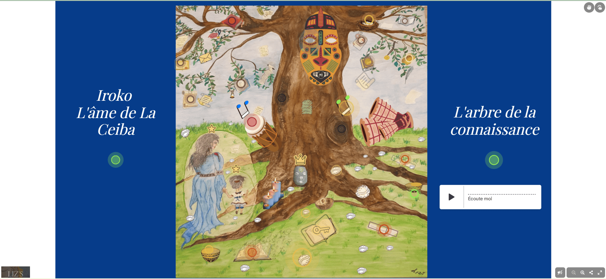
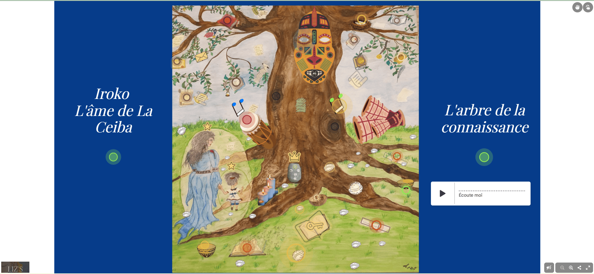
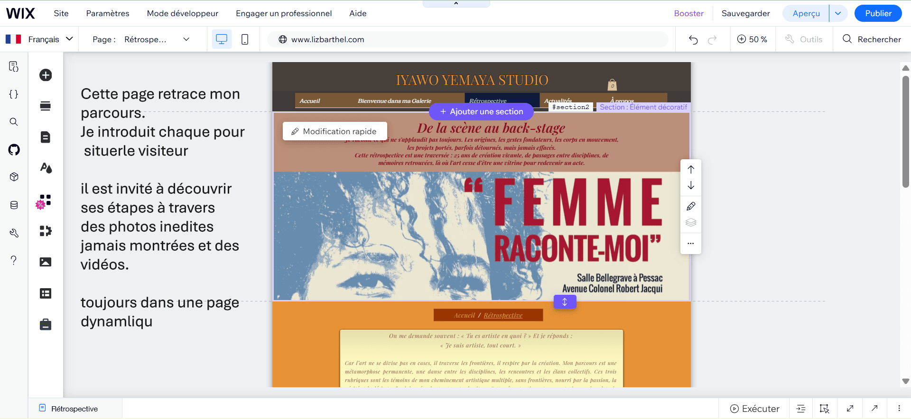
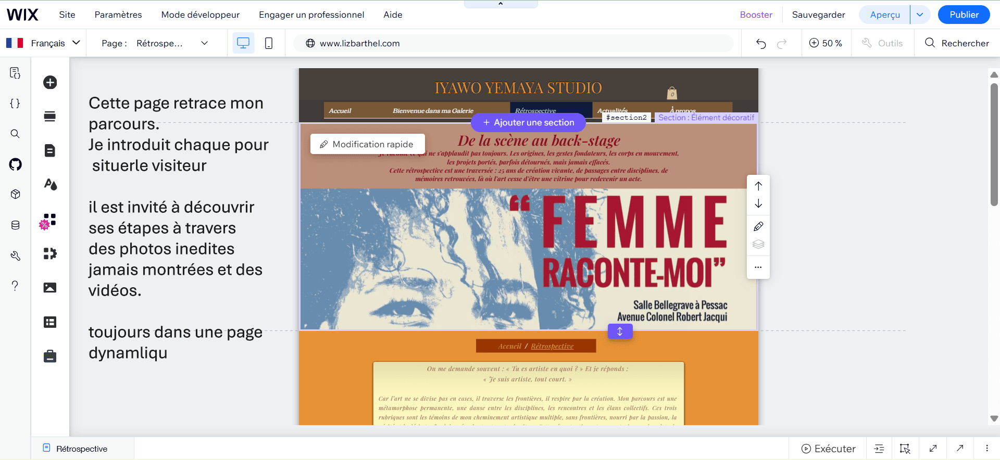

Inicio
Texto en español, claro.

 


 

Exposiciones, proyectos y etapas clave de un recorrido artístico en constante evolución.
Texto en español, claro.
Texto existente adaptado.
Cómo evoluciona su trabajo.
Para una exposición, una residencia o un proyecto colaborativo, contáctame
Para colaboraciones o dossier, visita la sección “Contacto”.
Un recorrido por etapas, exposiciones y procesos creativos.
Pega aquí el texto original de Liz (sin cambiarlo).
Pega aquí el texto original de Liz (sin cambiarlo).
Pega aquí el texto original de Liz (sin cambiarlo).
Este recorrido forma parte de un proceso en evolución. Para exposiciones, colaboraciones o información adicional, puedes ponerte en contacto conmigo.
Contacto y colaboraciones